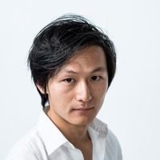
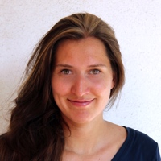

A propos d'Escargot
Yuanye Lu 陆原野
D’origine chinoise, Yuanye est diplômé de Sciences Po et du Cours Florent. Son intérêt pour le cinéma et son modèle économique l’ont conduit à écrire une thèse sur la politique cinématographique européenne. Il a joué aussi joué dans des films et des pièces de théâtre, notamment au Théâtre de la Coline pour Marcus Borja et dans le film La terre penche de Christelle Lheureux, diffusé sur ARTE. Il met en scène Die Hamlet / Maschine dans une interprétation contemporaine.
Avec Escargot Productions il veut combler le fossé entre le marché audiovisuel européen et chinois.
Charlotte Schranz
Charlotte a étudié à Sciences Po où elle a obtenu son diplôme avec mention ainsi qu’un Master en communication. Elle a commencé en tant que stagiaire pour la télévision européenne franco-allemande ARTE. Elle a ensuite développé des projets documentaires pour les chaînes françaises et internationales avec la société de production Pernel Media. Elle a également travaillé avec le réalisateur allemand primé Arne Birkenstock sur le projet transmedia "The Congo Tribunal".
Elle est productrice, chargée du développement international pour Escargot Productions.